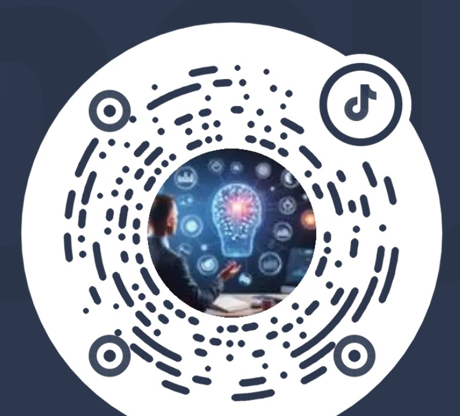
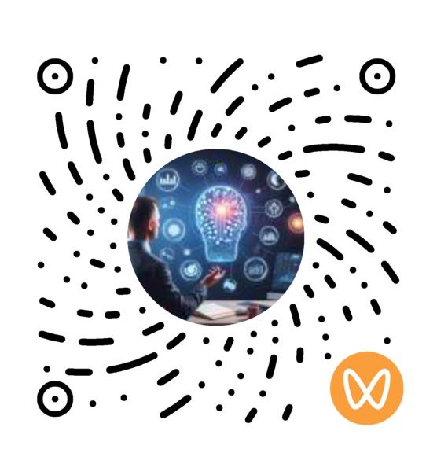

職業經歷
- 百事可樂
- 福喜食品 / OSI Group
- 金蝶
- 信華信
- 北京合思
- 用友網路
ENTERPRISE AI / FIELD DELIVERY / PRODUCT
Enterprise AI · FDE · AI Product Manager。連結經營、財務、ERP 與資料團隊，將 AI 場景從業務診斷、產品設計推進至 POC 驗證與規模化營運。
PROFILE
企業 AI 產品經理 / FDE，連結管理層、業務團隊與技術團隊，讓 AI 從場景判斷走向受控交付。
現任斯沃特（大連）信息技術有限公司 AI 產品經理 / FDE（Forward Deployed Engineer，前沿部署工程師）。具備 20 餘年企業經營管理、財務數位化與資訊系統建設經驗，兼具企業端財務管理、ERP 項目實施、數位化諮詢、產品規劃與項目管理背景。
近年重點聚焦企業級 AI 產品規劃與企業端 AI 項目落地，圍繞 AI 財務、經營分析、企業知識庫、流程智慧化與經營駕駛艙等方向，進行業務調研、場景識別與優先級管理、產品藍圖規劃、MVP 設計，以及 Agent 業務閉環的驗證迭代。
長期從事集團財務管控、業財融合、財務共享、經營分析、流程優化與大型 ERP 項目規劃；將制度、流程、經營指標、資料資源與專家經驗，轉化為可驗證、可整合、可營運的 AI 產品能力，並關注人機協作、權限控制、異常升級與持續治理。
職業經歷
核心企業平台
業務與管理系統
數位商務
服務企業類型
產業實務
CAPABILITIES
成熟度診斷、場景池、價值排序、路線圖與投資邊界。
Agent 閉環、產品需求、互動設計、人機協作與評測標準。
查看結構化規格設計示例（簡體中文）↗現場調研、問題釐清、共同設計 POC、驗證迭代與交付協作。
業財融合、財務共享、經營分析、流程控制與企業系統整合。
業務語意、指標口徑、結構化事實、RAG 與知識治理邊界。
權限、稽核、人工審批、固定評測集、灰度發布與持續優化。
SELECTED WORK
以下內容均為匿名化案例或 POC 方案；不展示客戶名稱、業務資料、交付文件與系統細節。
圍繞現金流、利潤與風險情境，建立可追溯、只分析不執行的 CFO 決策支援閉環。
將預測、規劃、計算、校驗與敘述分層，支援面向業務人員的受控分析與建議產出。
查看匿名案例（簡體中文）將制度、流程與業務物件連結為可治理的知識與語意層，明確 RAG、結構化事實與權限邊界。
查看匿名案例（簡體中文）梳理使用者、流程、例外、系統與真實業務基線。
以價值、資料條件、風險與可衡量性確定 MVP。
定義輸入、判斷、動作、結果、狀態、責任人與邊界。
用固定評測、人工協作與受控 POC 驗證是否值得擴張。
TEACHING & INSIGHTS
企業 AI 與數位轉型實戰講師
持續內容分享


EXPERIENCE
企業 AI 產品規劃、現場場景共創、Agent 閉環設計、POC 與營運治理。
AI 經營分析、知識中台、財務智慧化、業務流程與組織協作規劃。
大型集團財務管控、財務共享、業財融合、經營分析與複雜項目交付。
CONTACT
如需討論企業 AI 場景、POC 或產品規劃，歡迎透過電子郵件聯絡。網站不公開電話、所在地或個人身分資訊。
39210670@qq.com